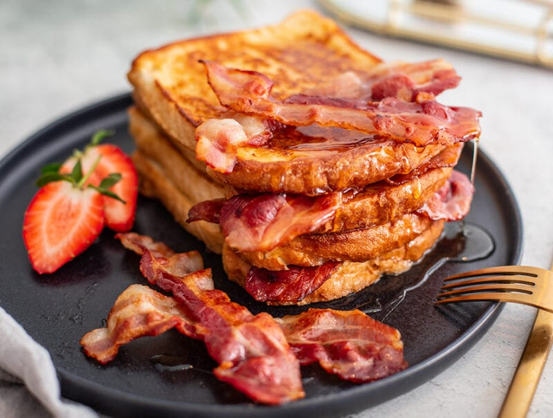

French Toast

Description
French Toast, a quintisentiall Breakfast classic. Wether you love a sweat treat or a savory bite to eat this dish is the bish.
Servings
Serves 4
Ingredients
- Brioche bread
- 4 large eggs
- Bacon
- ½ cup milk
- ½ teaspoon vanilla
- ¼ teaspoon ground cinnamon
- 2 tablespoons Maple syrup
- 2 tablespoons Butter or oil for frying
- Icing sugar (optional)
Directions
- Pre-heat grill and pan
- In a shallow mixing bowl, whisk together the eggs, milk, vanilla and cinnamon.
- Quickly dip slices (do not soak) in egg mixture and cook until golden brown on both sides.
- Place bacon in grill
- Add dipped bread slices to the pan with butter, allow to fry until golden and then flip
- Repeat until all slices are complete
- Stack complete bread, add bacon and mayple syrup
- Sprinkle icing sugar over the top